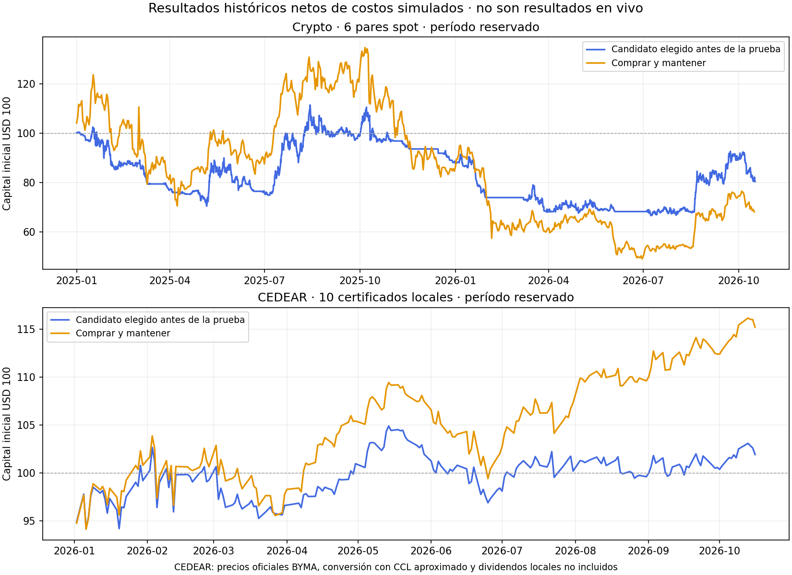

Estudio cerrado el 17 de octubre de 2026 · datos hasta el 16/10/2026
Qué rindió más después de costos
Comparamos 30 variantes sobre seis pares crypto y diez CEDEAR, incluyendo comprar y mantener. En el período conjunto de validación y prueba, la mayor rentabilidad de precios fue la de comprar y mantener una cartera diversificada.
Prueba final reservada
| Mercado y período | Candidato activo seleccionado antes de la prueba | Comprar y mantener |
|---|---|---|
| Crypto · 2025 al 16/10/2026 | −19,6% | −31,9% |
| CEDEAR · 2026 al 16/10/2026 | +1,9% | +15,2% |
En las ventanas combinadas de validación y prueba, comprar y mantener obtuvo +153,1% en crypto (2023–16/10/2026) y +34,3% en CEDEAR (julio de 2025–16/10/2026). Cada ventana reinicia pesos iguales por activo y liquida al final con costos; esos porcentajes presuponen recomposición en su frontera. No representan una cartera continua sin rebalanceos ni resultados de operaciones reales.

Datos, costos y límites de la comparación
- Crypto spot, sin posiciones cortas ni apalancamiento: BTC, ETH, BNB, XRP, ADA y LTC. Se estudiaron velas diarias y de cuatro horas.
- CEDEAR con precios oficiales de BYMA: AAPL, MSFT, AMZN, GOOGL, META, NVDA, KO, XOM, JNJ y WMT. Los indicadores usan el cierre previo conocido del subyacente; la ejecución usa el certificado local.
- Costos por ejecución: crypto 0,10% de comisión y 0,05% de deslizamiento; CEDEAR 0,60% y 0,20%. También se evaluó el doble de ambos costos.
- Retornos expresados en USD con un CCL aproximado. La caja CEDEAR queda en pesos. No se verificaron dividendos/custodia locales, impuestos personales ni tarifas reales de un broker.
- CEDEAR: rendimientos de precios, sin dividendos locales no verificados. BYMA sólo expuso aproximadamente dos años de histórico. Se descartaron series locales Yahoo con cambios de ratio mal ajustados.
- La selección congelada se hizo con entrenamiento antes de abrir la prueba final. El posterior ranking de todas las variantes es retrospectivo y no autoriza elegir parámetros mirando esa prueba.
Descargar las 30 comparaciones (CSV) · Resultados completos (JSON) · Metodología y reproducción en el repositorio